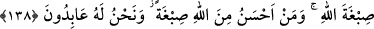
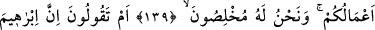
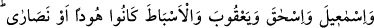
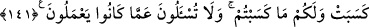

ALLAH’IN RENGİYLE
BOYANMAK
138. Allah’ın (verdiği) rengiyle boyandık. Allah’dan daha güzel rengi kim
verebilir? Biz ancak O’na kulluk ederiz (deyin).
139. De ki: Allah bizim de Rabbimiz, sizin de Rabbiniz olduğu halde, O’nun
hakkında bizimle tartışmaya mı girişiyorsunuz? Bizim yaptıklarımız bize, sizin
yaptıklarınız da size âittir. Biz O’na gönülden bağlananlarız.
140. Yoksa siz, İbrâhîm, İsmâîl, İshâk, Ya’kûb ve esbâtın yahûdî, yahut hıristiyan
olduklarını mı söylüyorsunuz? De ki: Siz mi daha iyi bilirsiniz, yoksa Allah mı?
Allah tarafından kendisine (bildirilmiş) bir şâhitliği gizleyenden daha zâlim kim
olabilir? Allah yaptıklarınızdan gâfil değildir.
141. Onlar bir ümmetti; gelip geçti. Onların kazandıkları kendilerine, sizin
kazandıklarınız da size âittir. Siz onların yaptıklarından sorguya çekilmezsiniz.
“Allah’ın boyası” ta’bîriyle, Allah’ın insanları yarattığı fıtrat kasdedilmiştir. Kulun
îmânı ve diğer ibâdet çeşitlerini kabûle uygun ve temiz yaratılışı elbisenin boyasına
benzetilmiştir. Her ikisinin de zînet ve süs olması sebebiyle bu benzetme yapılmıştır. Bu
açıdan mânâ: “Allah bizi doğruyu ve îmânı kabûle müsâid bir yaratılışla yarattı.”
şeklindedir.
Bu âyet daha önce geçen; “Allah’a inandık” âyetini te’kid etmektedir. Çünkü onların
Allah’a îmânları, Allah’ın onları hakkı kabûl etme ve îmân zîneti ile nimetlenme
istidâdı ile yaratmasına bağlıdır. Takdîrin: “Allah bizi temizledi” şeklinde olması da
muhtemeldir. Çünkü îmân, nefsi küfür kirinden temizler. Aralarındaki benzerlikten
dolayı “sıbga” denilmiştir. Bu durum, bir şeyi başka bir kelimeyle ifâdedir. Çünkü bu,
o şeyin ya hakîkî veya mukadder olan bir ifâde beraberliği açısındandır. Bu başka olan